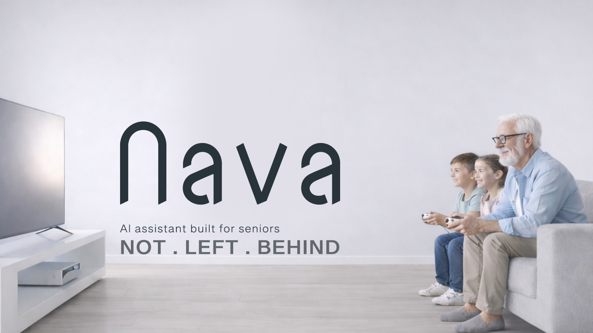

The Problem
Millions of older adults needs face fragmented interfaces, unclear navigation, and devices that assume prior digital literacy. As essential services move online, the gap between those who can participate and those who are excluded keeps widening.
The reality of effective digital inclusion
- Complex menus and small touch targets exclude users with motor or vision differences.
- Support often requires a “tech-savvy” family member who may not always be available.
- Products optimize for power users, not for clarity, patience, and plain language.
- Fear of “breaking something” leads many to disengage from useful tools entirely.
The Product
Nava is a solution for accessibility challenges across communication, information, and entertainment. Easily connect with loved ones, get answers in no time, and complete everyday tasks—with a voice-first experience.
Persona
Ashley Miller
74 years old
“I just feel like I’m trying to keep up, and it’s not as easy as it should be.”

Technology use
- Tablet for video calls and photos
- Smart TV for streaming
- Avoids installing new apps without help
Social habits
- Weekly calls with grandchildren
- Book club and community center
- Prefers voice over typing
Daily challenges
- Small text and dense settings screens
- Remembering passwords and steps
- Fear of scams and mis-taps
Motivations
- Staying independent at home
- Helping family when she can
- Learning without feeling judged
Goals
- Reliable video visits
- Simple answers about bills and benefits
- Enjoying shows without tech friction
Frustrations & core needs
- Interfaces that change without warning
- Jargon-heavy error messages
- Needs patience, repetition, and clear next steps
Prototype
Market Analysis
The market for inclusive consumer technology is expanding as populations age and regulations emphasize accessible design. Organizations that pair simple interaction models with trustworthy assistance can capture both direct-to-consumer and partnership channels.
$12.4B
Estimated reachable serviceable market for assistive & inclusive UX (illustrative).
Nava targets households where clarity and human tone matter more than feature depth—starting with communication, guidance, and media, then expanding through integrations.